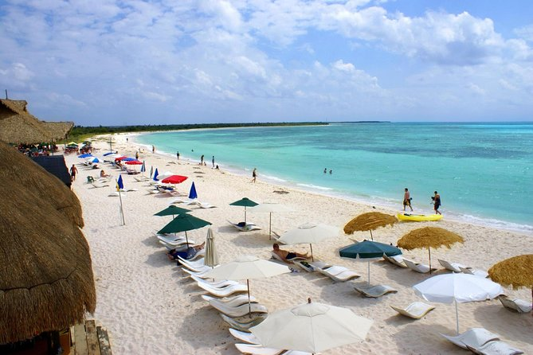
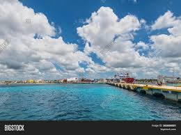
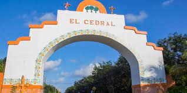
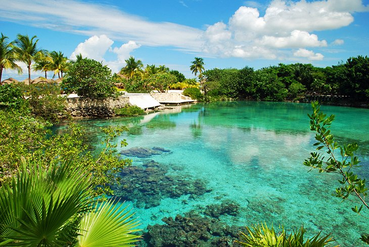

Know more about Cozumel Islands
Other places you can visit here:
San Miguel de Cozumel
San Miguel de Cozumel. It is a hub for tourism on the Riviera Maya, providing the sole ferries between the Mexican mainland and the island. In addition to the ferry service to Playa del Carmen, the first international cruise terminal in Quintana Roo is located in the city. The International Pier has an international cruise wharf of 271 meters and a dolphin at 45 meters, giving it the ability to receive two cruise ships at once: the exterior band can receive voyager class ships of 140,000 displacement tons, and the interior band can receive ships up to 85,000 displacement tons. A tender wharf is used to receive minor boats at the terminal.
El Cedral Ruinas in Cozumel
El Cedral is the oldest Mayan Ruins on Cozumel Island, dating back to 800 A.D. The Mayan village was once the capital of Cozumel, and the largest community on the island. It was discovered by Spanish Conquistadors in 1518, who tore down much of the Mayan temple, and then during World War II, the U.S. Army Corps of Engineers destroyed more of it to make way for the island's first airport. Today, there is not much of this once significant Mayan temple remaining, but you can see a portion of it, and with the help of one of our knowledgeable guides, you can picture the community as it once existed - as the hub of Mayan life in Cozumel.
Laguna Chankanaab - Marine Park
One of the most interesting natural attractions on Cozumel is Laguna Chankanaab, a small freshwater lake just six kilometers south of San Miguel de Cozumel in the National Marine Park. Cut off from the sea (apart from a number of underground channels), it's a popular place to visit thanks to its crystal-clear water and numerous colorful tropical fish, and is an enchanting place to swim, snorkel, and scuba dive. Here guests can enjoy activities including a sea lion show, a dolphin swim experience, and a crocodile exhibition. Other fun things to do include ziplining and treetop climbing, as well as a visit to an authentic Mayan home to sample traditional foods.
